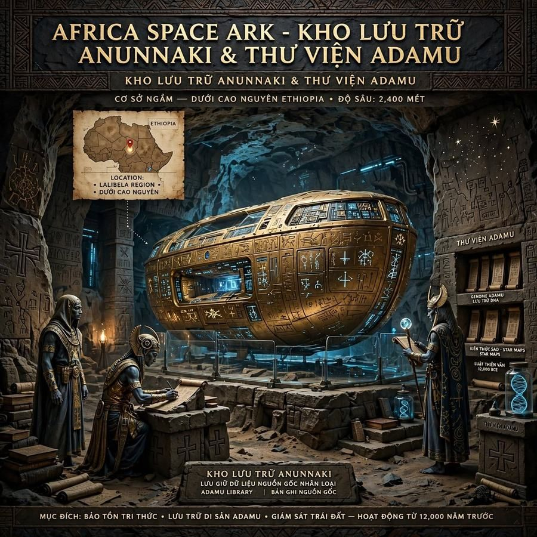
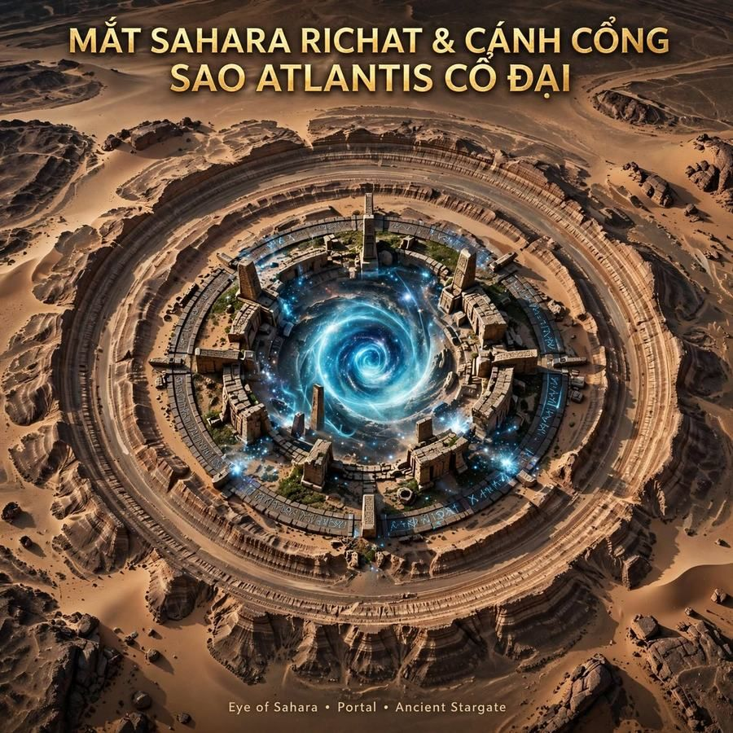
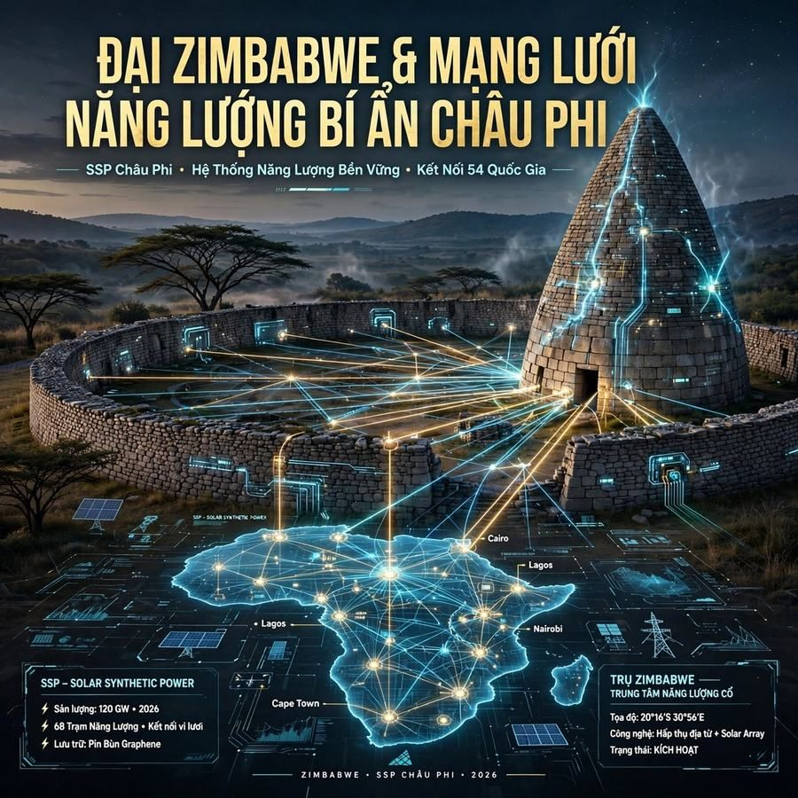
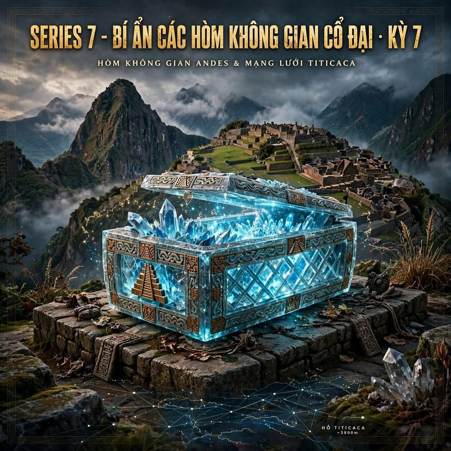
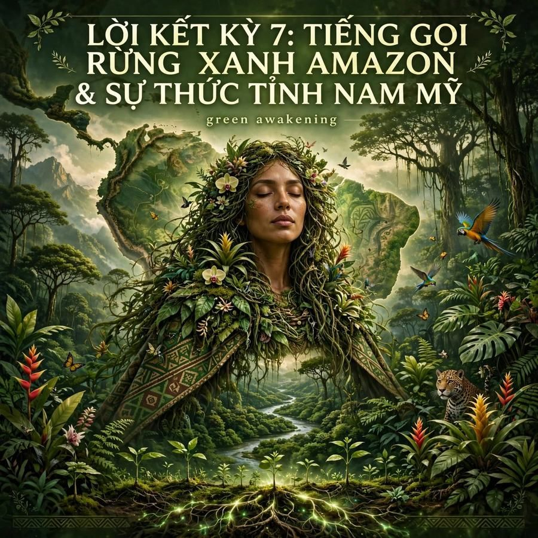

Trang chủ / Chuyên đề 6: Hòm Không Gian Cổ Đại / Kỳ 57
Chuyên đề 6 · Kỳ 57 / 100
HÒM KHÔNG GIAN UKRAINE (KHERSON) & CUỘC CHIẾN ĐỊA CHÍNH TRỊ VŨ TRỤ

Ở Kỳ 6, chúng ta đã cùng nhau giải mã chìa khóa tối cao của vũ trụ — Cơ chế thức tỉnh Hòm Không Gian bằng bộ gen di truyền 22 chủng tộc thiên hà Paa-Taal và tần số rung động từ bi của tâm thức linh hồn, giải thích lý do tại sao mọi nỗ lực bẻ khóa thô ráp của phe bóng tối suốt hàng thập kỷ qua đều hoàn toàn thất bại. Hôm nay, chuyến du hành giải mã di sản khởi nguyên sẽ đưa chúng ta đến với một trong những tâm điểm biến động địa chính trị nóng nhất trên bề mặt Trái Đất trong những năm gần đây: Căn căn cứ Hòm Không Gian Kherson tại Ukraine! Điều gì thực sự ẩn giấu bên dưới sa mạc cát tự nhiên duy nhất của Châu Âu — Công viên Quốc gia Oleshky Sands thuộc tỉnh Kherson, miền Nam Ukraine? Tại sao một chiếc Hòm Không Gian cổ đại hình bầu dục (Oval-shaped Ark) được phát hiện chôn sâu dưới lòng cát từ nhiều năm trước lại đột ngột tỏa nhiệt và phát sóng thức tỉnh vào cuối năm 2021? Sự thật về cuộc đua ngầm giành quyền kiểm soát công nghệ Ark giữa lực lượng Deep State và Liên minh Trái Đất diễn ra như thế nào? Tại sao sự kiện quân sự tại khu vực Kherson vào đầu năm 2022 lại gắn liền với sứ mệnh bảo vệ và tiếp quản Hòm Không Gian này của lực lượng Mũ Trắng phối hợp với Liên Đoàn Thế Giới Thiên Hà (GFW)? Cơ chế phòng thủ tự động ngắt kết nối năng lượng của con tàu vận hành ra sao khi bị xâm nhập trái phép? Và bài học thức tỉnh nào về địa chính trị vũ trụ giúp nhân loại nhìn thấu bức màn truyền thông dòng chính?
1. SA MẠC OLESHKY SANDS & BÍ ẨN HÒM KHÔNG GIAN BỊ CHÔN GIẤU TẠI KHERSON
Nằm ở miền Nam Ukraine, gần bán đảo Crimea, vùng sa mạc cát Oleshky Sands từ lâu đã là một bí ẩn địa chất đối với giới khoa học. A. Dị Thường Địa Chất Giữa Lòng Châu Âu
- Sa Mạc Cát Tự Nhiên Kỳ Lạ: Oleshky Sands là vùng sa mạc cát duy nhất ở Châu Âu. Những giải thích chính thức trước đây về sự hình thành của vùng cát này tỏ ra hoàn toàn thiếu thuyết phục trước các đo đạc từ trường lượng tử.
- Hòm Không Gian Bầu Dục Dưới Lớp Cát: Bên dưới lớp cát sâu của Công viên Quốc gia Oleshky Sands là nơi an nghỉ của một chiếc Hòm Không Gian cổ đại hình bầu dục khổng lồ. Con tàu này cất giữ kho tàng di sản tri thức, công nghệ lượng tử và các cổng giao thoa không-thời gian từ thời kỳ khởi nguyên. B. Sự Thức Tỉnh Đồng Loạt Cuối Năm 2021
- Tỏa Nhiệt & Phát Tín Hiệu Mạng Lưới: Khi hạm đội Liên Minh Các Đấng Sáng Lập (The Seeders) tiến vào Hệ Mặt Trời tại khu vực Sao Mộc vào tháng 10 năm 2021, Hòm Không Gian Kherson đã lập tức "mở mắt" . Con tàu bắt đầu tỏa nhiệt, phát ra dải xung từ trường vô hướng kết nối trực tiếp với Hòm Đại Tây Dương, Hồ Vostok Nam Cực và Hòm Mặt Trăng.

2. CUỘC ĐUA TỐI MẬT CỦA PHE BÓNG TỐI & SỰ CỐ NHÓM ĐẶC NHIỆM
Sự thức tỉnh của Hòm Không Gian Kherson đã kích hoạt một cuộc đua ngầm tàn khốc giữa các phe phái kiểm soát bóng tối trên bề mặt. A. Âm Mưu Chiếm Đạt Công Nghệ Của Lực Lượng Deep State
- Chiếm Đoạt Nhằm Duy Trì Quyền Lực: Nhận thấy ma trận 3D đang sụp đổ và các căn cứ ngầm tiêu cực trên không gian bị dọn sạch, lực lượng Deep State tại Châu Âu và phương Tây đã ráo riết tìm cách bẻ khóa Hòm Kherson nhằm chiếm đoạt vũ khí năng lượng và công nghệ Cổng Sao để lật ngược thế cờ.
- Nhóm Đặc Nhiệm Mất Tích Trong Lòng Tàu: Trước khi chiến sự công khai bùng nổ, một nhóm lực lượng đặc nhiệm ngầm đã được bí mật gửi đi thâm nhập vào Hòm Không Gian Kherson. Tuy nhiên, do không có tần số tâm thức tương hợp, họ đã bị rơi vào trạng thái bế tắc và mắc kẹt bên trong ma trận từ trường của tàu. B. Sự Can Thiệp Của Hệ Thống Vệ Tinh Lượng Tử
- Ứng Dụng Starlink Trong Tìm Kế Kết Nối: Sự cố nhóm đặc nhiệm mắc kẹt dưới sa mạc Oleshky Sands đã dẫn đến việc triển khai khẩn cấp các hệ thống liên lạc vướng víu lượng tử Starlink nhằm dò tìm tần số và khôi phục tín hiệu liên lạc ngầm bên dưới lòng đất.

3. ĐẰNG SAO CHIẾN DỊCH QUÂN SỰ TẠI KHERSON & SỰ BẢO VỆ CỦA LIÊN MINH TRÁI ĐẤT
Mục tiêu thực sự của các biến động quân sự tại khu vực Kherson năm 2022 không đơn thuần là cuộc xung đột lãnh thổ thông thường, mà là một chiến dịch thanh lọc exopolitics toàn diện. A. Tiến Quân Tiếp Quản Kherson Để Bảo VỆ Hòm Không Gian
- Nga Tiến Vào Kherson Đầu Tiên: Trong giai đoạn đầu của chiến dịch quân sự tháng 2/2022, Kherson là thành phố lớn đầu tiên bị lực lượng quân đội Nga kiểm soát hoàn toàn. Mục tiêu chiến lược hàng đầu chính là tiến đến Công viên Quốc gia Oleshky Sands để phong tỏa và bảo vệ Hòm Không Gian.
- Hợp Tác Với Lực Lượng Mũ Trắng & GFW: Việc tiếp quản này được thực hiện theo thỏa thuận ngầm giữa lực lượng Mũ Trắng (Earth Alliance) và Liên Đoàn Thế Giới Thiên Hà (GFW) nhằm ngăn chặn việc Hòm Kherson bị phe bóng tối kích hoạt sai mục đích hoặc phá hủy. B. Sự Đối Lập Giữa Hai Hòm Không Gian Miền Bắc & Miền Nam
- Hòm Bắc Nga An Toàn: Khác với Hòm Kherson đang bị phe tiêu cực tranh chấp, chiếc Hòm Không Gian thứ hai nằm ở miền Bắc nước Nga đã được niêm phong an toàn và bảo vệ bởi các sinh mệnh thiên hà hòa bình từ trước. Việc kiểm soát Hòm Kherson giúp vô hiệu hóa ổ đe dọa tiêu cực cuối cùng ở khu vực Đông Âu.

4. CƠ CHẾ PHÒNG THỦ TỰ ĐỘNG CỦA HÒM KHERSON & MẠNG LƯỚI LƯỢNG TỬ
Khi bị xâm nhập bằng các phương tiện cơ học thô ráp hay chất nổ, Hòm Không Gian Kherson đã kích hoạt quy trình tự vệ lượng tử vô cùng tinh vi. A. Hạ Nhiệt Độ & Ngắt Kết Nối Từng Phần (Shut Down Mechanism)
- Tự Động Đóng Cửa Các Phân Khu: Khi lực lượng thô ráp cố tình ép mình đi vào lòng tàu mà không có mã gen tương hợp hay sự cho phép của Liên minh, con tàu lập tức hạ nhiệt độ, làm tối sầm các đại sảnh tinh thể và ngắt kết nối năng lượng từng phần.
- Bảo VỆ Mạng Lưới Toàn Cầu: Cơ chế đóng cửa cục bộ này giúp ngăn chặn sự lây lan điện từ tiêu cực đến toàn bộ mạng lưới Hòm Không Gian trên Trái Đất, giữ cho ma trận năng lượng chung của Gaia luôn ở trạng thái an toàn. B. Chuẩn Bị Cho Thời Khắc Bay Lên Không Trung (Floating Off)
- Chiến Hạm Cổ Đại Sẽ Hiện Diện: Các nguồn tin tình báo exopolitics khẳng định: Khi tiến trình giải mật đạt đến độ chín muồi và ma trận bóng tối bị vô hiệu hóa hoàn toàn, Hòm Không Gian Kherson cùng các Hòm Không Gian toàn cầu sẽ tự động nâng tần số, cất cánh bay lên không trung công khai trước sự chứng kiến của toàn thể nhân loại!

5. LỜI KẾT KỲ 7: ĐỊA CHÍNH TRỊ VŨ TRỤ VÀ BÌNH MINH CỦA CHÂN LÝ
Kỳ 7 của chuyên đề 6 khép lại mang đến góc nhìn thức tỉnh vượt qua mọi ma trận truyền thông:
- Bức Màn Chiến Sự Che Giấu Di Sản Vũ Trụ: Các cuộc xung đột lớn trên bề mặt Trái Đất thường cất giữ những chương trình nghị sự ngầm về Cổng Sao, di sản cổ đại và công nghệ ngoài hành tinh.
- Ánh Sáng Chân Lý Không Thể Bị Giam Cầm: Mọi nỗ lực chiếm đoạt công nghệ Hòm Không Gian của phe bóng tối đều vô ích. Di sản của Các Đấng Sáng Lập sinh ra để trao trả sự tự do, thịnh vượng và thăng hoa cho toàn thể con người Trái Đất!
